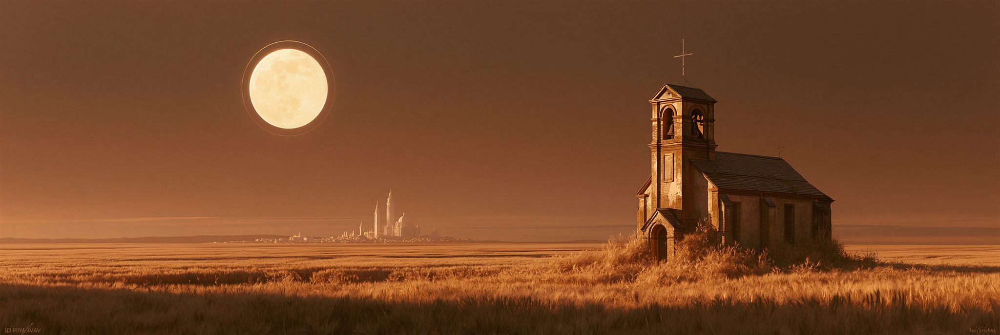
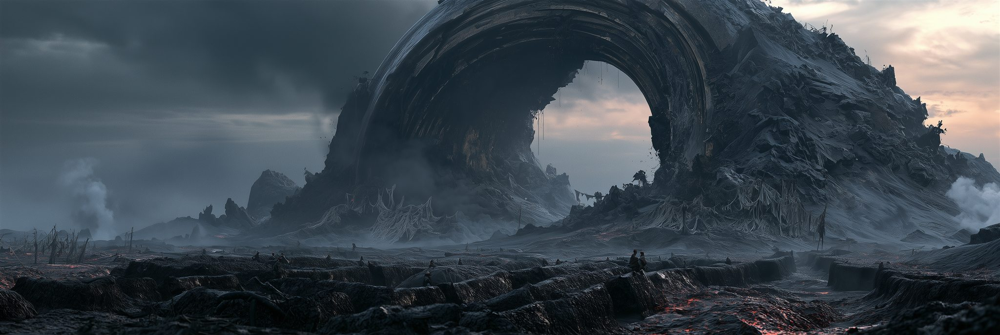
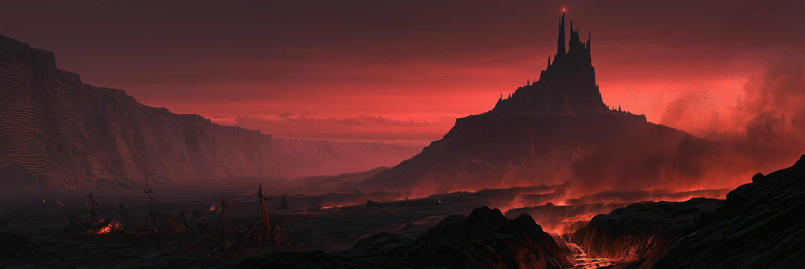
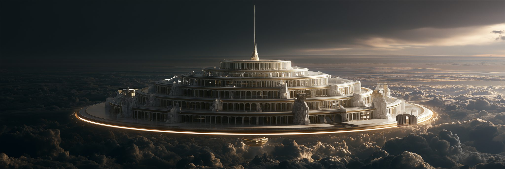

남쪽에 인간의 땅, 북쪽에 마족의 땅, 그 사이에 재의 회랑. 그리고 하늘 위에 아이테리온이 있다.
지명은 세 층으로 존재한다 — 지금 쓰는 이름, 오메가세대가 쓰던 원명, 그리고 셀레스티엘의 관측 명칭.

교단 공식 명칭은 솔라리아 성권(聖圈), 「빛이 머무는 땅」. 태양에서 온 이름이지만 이 세계의 태양에는 궤도가 없다. 대륙 이름 자체가 아이러니다.
비옥하고 온화하다. 대재해가 없고 기근이 드물다. 교단은 은총이라 가르친다.
조건이 통제되고 있기 때문에 안정적이다. 지진도 화산도 대홍수도 없는 것은 변수가 억제되고 있기 때문이며, 토양이 어디나 균질한 것은 동일한 배지이기 때문이다.
성도 셀레스티아 · 순례도시 베네딕 · 행정도시 오르디네
도시 이름이 신의 이름에서 왔다. 사람들은 영광으로 여긴다.
그라나 · 캄포 비에호(주인공의 고향) · 몰리노
튜토리얼 무대. 밀밭과 낡은 예배당.
학문도시 살마니카 · 항구 포르토 벨라 · 어촌 아술
별이 움직이지 않는다는 사실에 평생 매달린 천문학자가 있다. 그리고 그는 옳다.
공방도시 포르지아 · 광산 미네르바 · 고산마을 알타 비아
기술이 가장 발달한 지방이자 감시가 가장 심한 지방. 「하늘의 부름」 한계선이 육안으로 보이는 유일한 곳.
아퀼라 요새 · 울티마(이름 그대로 「마지막」) · 로카 그리지아
교단 경전에 없는 천사 이름들이 구전으로 남은 곳. 진실은 교단이 아니라 변방에 있다.
피니스 · 사일렌티움 수도원
「끝」을 연구하다 이단으로 몰린 수사들의 흔적.
지방 카드를 누르면 인간 편 · 솔라리아 지리지의 상세 항목으로 이동한다.

남북 사이의 띠 모양 지대. 수백 년간 전선이었고 지금도 전선이다. 그리고 유적이 가장 많다 — 오메가세대의 중심지였고, 그래서 폐기 화력도 여기 집중됐다.
정중앙에 원점(Origo)이 있다. 오메가세대 중앙 사령부 유적이자 3막의 핵심 던전이다.
사람들은 이 유적들을 천족이 남긴 성물이라 믿는다 — 교단이 그렇게 가르치기 때문이다. 함부로 파는 것은 신성모독이고, 발굴꾼은 반쯤 이단 취급을 받으며, 병사들은 반쯤 묻힌 구조물에 기원 리본을 걸고 지나간다. 인간이 도달했던 가장 높은 성취가, 인간을 가둔 자의 업적으로 숭배되고 있다.
이 교리는 천계가 설계했다. 지울 수 없다면 읽히지 않게 한다 — 성별(聖別)은 다섯 겹 봉인 중 하나다. 왜 지울 수 없는지는 인과율 제3조에 있다.
전쟁이 여기서만 벌어지고, 유적도 여기 있으므로 — 플레이어가 발굴하러 가는 곳이 곧 전선이 된다.

마족의 말로 「남은 것」이라는 뜻이다. 왜 그렇게 부르는지는 아무도 모른다. 그저 오래전부터 그렇게 불러왔다.
「스카르드」와 「잔여구」는 같은 뜻이다. 그들은 자기도 모르게 자기를 잔여물이라 부르고 있었다.
전초 크로그(버티는 곳) · 재의 야영지 아스크(재)
타서 굳은 벌판. 마족은 여기서 인간과 싸운다. 폐기 화력이 정확히 이 선에서 멈춘 흔적이라는 것은 아무도 모른다.
대장간 도시 스미르(두드리는 곳) · 화로 마을 글로드(숯불)
마족의 무구는 전부 여기서 나온다. 800년째 식지 않는 열원을 그들은 「땅의 숨」이라 부른다.
장례 마을 흐빌(잠든 곳) · 노래꾼들의 본향
조상의 무덤이라 믿어 함부로 파지 않는다. 실제로 조상은 맞다 — 다만 계보가 이어진 조상이 아니다. 스물네 번의 마족이 겹쳐 묻혀 있고, 층수는 세대 수와 같다.
정착지가 없다 — 아무도 살지 않고, 모이기만 한다.
제사를 지내고 중요한 결정을 내리는 곳. 왜 하필 여기인지는 아무도 모른다.
마지막 초소 호름(가장자리)
끝까지 가본 자가 없다 — 정확히는, 돌아온 자가 없다. 호름의 비석에는 돌아오지 않은 자들의 이름이 해마다 늘어난다.
| 마족어 | 뜻 | 인간의 이름 | 오메가 원명 |
|---|---|---|---|
| 카르그 Karg | 탄 곳 | 잿벌 | 제1방어선 |
| 볼른 Voln | 끓는 곳 | 불의 땅 | 열원 시설군 |
| 드레크 Drekh | 누운 자들 | 뼈 골짜기 | 집단 매장지 |
| 그라드 Grad | 높은 곳 | 검은 왕좌 (마왕성) | 제3격납고 |
| 울드 Uld | 오래된 곳 | — | 관제탑 |
| 니플 Nifl | 보이지 않는 곳 | 북단 안개 | 장벽 북구 |
그들은 800년째 같은 자리에 모여 회의를 하고 있다.
그것이 회의실이었다는 것을 잊은 채로.
인간은 천상계라 부른다. 천사들은 아이테리온(Aetherion)이라 부른다. 절대신은 내려오지 않으므로, 올라가는 수밖에 없다.
겉보기는 눈부시게 아름답다. 백색과 금빛, 끝없는 회랑, 완벽한 비례. 그런데 조금만 걸어보면 이상하다 — 없는 것이 있다.
자지 않는다
먹지 않는다
모일 이유가 없다
밖을 볼 이유가 없다
쉬지 않는다
모든 공간에 기능이 있다
아름답지만 사람이 살 수 없는 아름다움이다.
레벨 디자인 요령 — 인간 도시와 정확히 같은 건축 문법을 쓰되 위 항목만 뺄 것. 플레이어는 무엇이 빠졌는지 설명하지 못한 채 불편함을 느낀다.

지상에서 올려다보면 아이테리온은 구름 위에 떠 있는 백금의 성이다. 교단 성화는 그것을 여덟 겹의 꽃잎이 중심을 감싸는 꽃으로 그린다. 절반은 맞다 — 여덟 구역은 실제로 동심원이다. 가장 바깥 고리가 포르타, 중심이 옴팔로스. 안쪽으로 갈수록 고리는 좁아지고 담당자의 격은 올라간다.
회랑은 한 줄기 나선이다. 갈림길이 없다. 어느 구역에서든 안쪽으로 가는 길은 하나뿐이고, 그 길은 반드시 이전 구역을 통과한다. 질서란 그런 것이다 — 건너뛸 수 없는 것.
가장자리는 「유리 바다」라 불린다. 페로의 고산에서 맑은 날 보이는 하늘 테두리의 빛이 여기서 온다. 그리고 아이테리온에는 그림자가 없다. 광원이 어디에도 없는데, 어디나 밝다.
원반이 접시라면 아이테리온은 뚜껑이다. 「유리 바다」는 뚜껑과 격벽이 맞물리는 이음매이고, 그림자 없는 빛은 조명이 아니라 관측용 균일광이다. 그리고 옴팔로스는 킨네리아의 원점 정확히 수직 위에 있다 — 접시를 들여다보는 눈의 자리다.
| 구역 | 담당 | 성격 |
|---|---|---|
| 포르타 PORTA | 발키리 여섯 | 외곽 관문. 지상과 아이테리온을 잇는 유일한 통로 — 천사가 내려간 자리도, 보고가 올라온 자리도 전부 여기다. 여섯의 대기소에는 의자가 여섯 개 있다(아이테리온에서 의자가 있는 유일한 방) |
| 사크라멘툼 SACRAMENTUM | 바르 | 서약의 전당. 벽면 전체가 계약문이다 — 맹약 원문을 직접 읽고 파괴할 수 있다 |
| 레테움 LETHEUM | 레테 | 망각의 샘. 지워진 기억이 고여 있다 |
| 아르카눔 ARCANUM | 우르드 | 기록고. 세대별 장부가 그리스 문자 순으로 24권. 25번째 자리에 「황금」이 놓여 있다 |
| 트리부날 TRIBUNAL | 네메시스 · 베르단디 | 집행청. 스쿨드의 자리에 아직 이름표가 붙어 있다 |
| 렉스 LEX | 테미스 | 율법전. 인과율 조문이 새겨진 곳. 「한계」의 근원 |
| 타키툼 TACITUM | 프리그 | 침묵의 문. 발소리도 전투 효과음도 나지 않는다 |
| 옴팔로스 OMPHALOS | 사대천사 · 셀레스티엘 | 중추. 배경에 원반 세계 전체가 접시처럼 펼쳐져 보인다. 중심을 네 방위에서 둘러싼 부속 예배소 — 이니티움 · 팍툼 · 오르도 · 파툼 — 이 사대천사의 자리이자 최종 레이드의 네 아레나다. 그 한가운데, 바닥이 곧 관측 창인 방이 오쿨루스 — 눈의 자리다 |
아이테리온의 기록상 명칭은 제0관측동이다. 그리고 옴팔로스에서 셀레스티엘은 세계를 위에서 본다 — 그러나 개인은 보지 않는다.